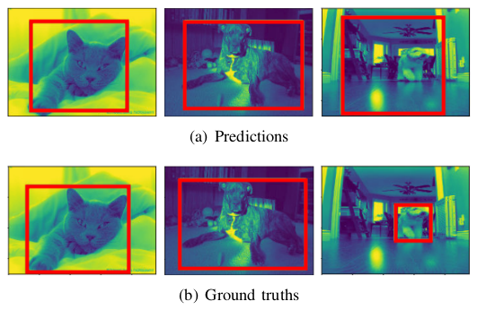
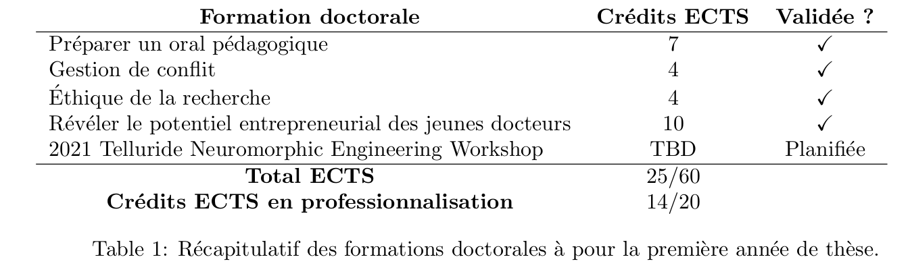
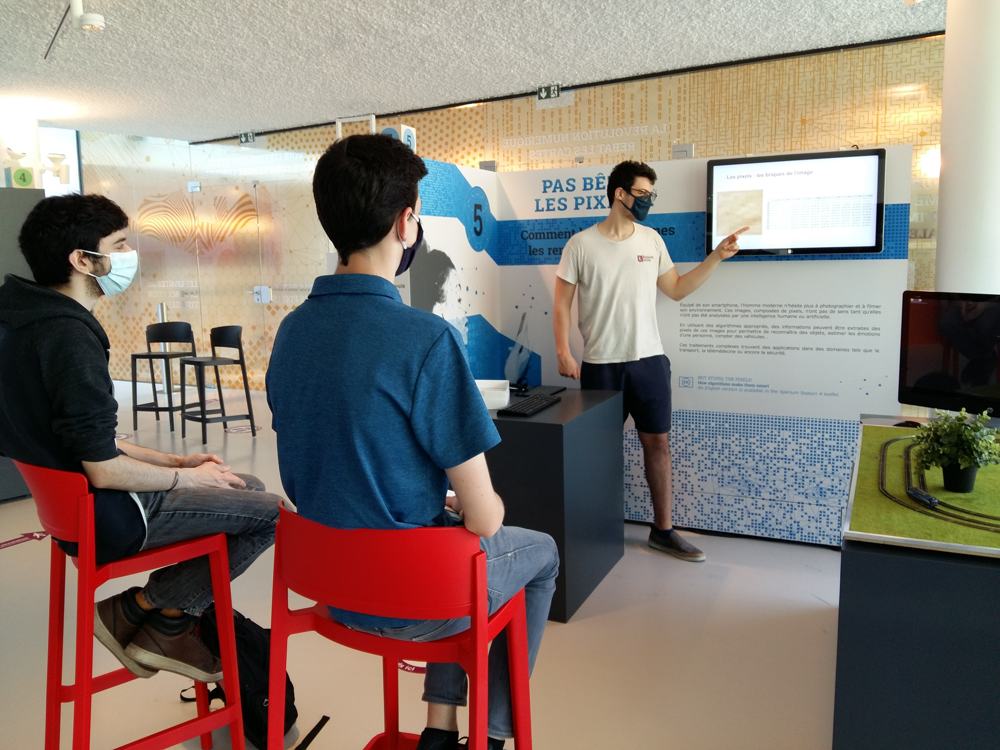
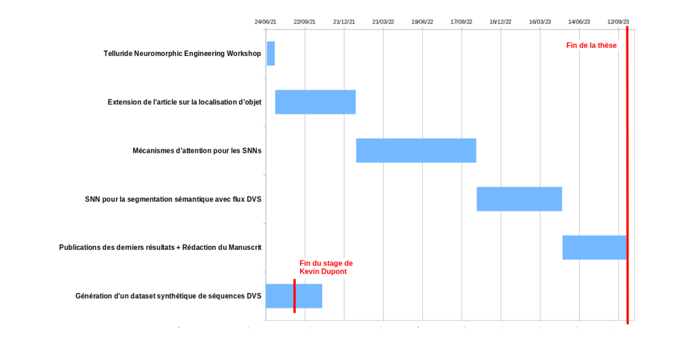

Development of Spiking Neural Networks (SNN) for Modern Computer Vision
Sami BARCHID
Directeur de thèse : Chaabane DJÉRABA
Co-encadrant : José MENNESSON

24/06/2021
Sami BARCHID
- Bachelor type court (🇧🇪) : Informatique de Gestion (web, mobile, ...)
- Master 1 : Option Image + Alternance FullStack Dev.
- Master 2 : Option IVI + Stage de Recherche
Sommaire
- Origines de la thèse
- Travail de première année
- État de l'art
- Contributions
- Travaux futurs
- Formations doctorales
- Médiation et enseignements
- Projet professionnel
Origines de la Thèse
Stage de recherche
Segmentation Sémantique RGB-D

- Publication poster à CBMI 2021
- Future valorisation du modèle développé
Observations
- Entraînements longs
- Consommation énergétique très haute
- Thèse pour répondre à ces problèmes
Spiking Neural Networks (SNNs)
- IA de troisième génération [Maass1997]
- Neurones impulsionnels : fortement inspirés des neurones biologiques
- Implémentation sur du hardware neuromorphique de très basse consommation [Davies2018]
- Une solution potentielle
Verrous scientifiques
- Performances loin derrière celles des réseaux de neurones artificiels (ANNs)
- Les neurones impulsionnels ne sont pas différentiables [Kaiser2020]
- Pas de rétro-propagation
SNNs en Vision Artificielle
- Tâches très simplistes (MNIST, ...)
- Réseaux peu profonds
Peu de travaux pour des tâches complexes (détection d'objets, segmentation sémantique)
Objectif de thèse
- Traiter des tâches de vision complexes avec ces SNNs
- Dans le cadre de la compréhension de scène (Segmentation, Détection, Tracking)
Travail de première année
État de l'Art
Vision bio-inspirée [Gallego2019]
Caméra DVS : caméra asynchrone inspirée de la voie optique dorsale
https://www.youtube.com/watch?v=lQCPCNDo22s
Neurone impulsionnel
- Communication asynchrone en événements discrets appelés "impulsions" ou "spikes"
- Fort similaire aux ANNs (poids synaptiques, organisation en couches, CNN, RNN, ...)
Neurones impulsionnels
https://www.youtube.com/watch?v=kPCZESVfHoQApprentissage avec SNNs
- Apprentissage biologique non-supervisé [Caporale2008]
- Conversion ANN vers SNN [Cao2015]
- Surrogate gradient learning [Kaiser2020]
Travail de première année
Contributions
Localisation d'objets
- Solution SNN pour la localisation d'un objet dans une image statique
- Premier travail de SNN profond pour une tâche complexe
Localisation d'objets
- Résultats prometteurs : 63.2% mIoU 
- Publication à CBMI 2021
Génération d'un dataset synthétique de séquences DVS
- Très peu de datasets DVS et tâches simplistes
- Créer un dataset vidéo d'envergure est trop lourd
- Solution : générer des environnements 3D et faire une capture DVS
Génération d'un dataset synthétique de séquences DVS
- Stage de M2 : Implémentation du générateur par Kevin Dupont
- Outils : UnrealEngine 4, UnrealCV [Weichao2017], V2E [Delbruck2020]
Travaux futurs
- Extension de Localisation d'Objets
- Mécanismes d'attention pour les SNNs
- SNN pour la segmentation sémantique DVS
Formations doctorales
Situation actuelle
Telluride Neuromorphic Engineering Workshop
- Workshop de trois semaines
- Projet en vision bio-inspirée
- Apprendre à utiliser du hardware neuromorphique de pointe (Intel Loihi)[Davies2018]
Médiations et enseignements
Xperium

- Médiation scientifique
- Expliquer le travail de FoX + démos
Enseignements
- Cours de Technologies du Web (L1) au FIL
- Contenu : HTML, CSS, JavaScript
- Volume horaire : 32 heures
Projet professionnel
Options
- Poursuite académique
- Entrepreneuriat
- R&D en entreprise
Merci !
References
- [Davies2018]: Davies, Mike, et al. "Loihi: A neuromorphic manycore processor with on-chip learning." Ieee Micro 38.1 (2018): 82-99.
- [Maass1997]: W. Maass, “Networks of spiking neurons: the third generation of neural network models,” Neural networks, vol. 10, no. 9, pp. 1659–1671, 1997.
- [Kaiser2020]: Kaiser, et al. “Synaptic plasticity dynamics for deep continuous local learning (decolle),” Frontiers in Neuroscience, vol. 14, p. 424, 2020.
- [Caporale2008]: N. Caporale and Y. Dan, "Spike timing-dependent plasticity: a Hebbian learning rule" Annu. Rev. Neurosci., vol. 31, pp. 25–46, 2008.
- [Cao2015]: Y. Cao, et al. “Spiking deep convolutional neural networks for energy-efficient object recognition,” International Journal of Computer Vision, vol. 113, no. 1, pp. 54–66, 2015.
- [Falez2019]: P. Falez, et al. "Multi-layered spiking neural network with target timestamp threshold adaptation and stdp," in 2019 International Joint Conference on Neural Networks (IJCNN). IEEE, 2019, pp. 1–8.
- [Gallego2019]: G. Gallego et al. "Event-based vision: A survey". arXiv preprint arXiv:1904.08405, 2019
- [Weichao2017]: Q. Weichao et al. "Unrealcv: Virtual worlds for computer vision." ACM Multimedia Open Source Software Competition, 2017
- [Delbruck2020]: T. Delbruck et al. "V2E: From video frames to realistic DVS event camera streams." arxiv, June 2020
Comparaison
https://www.youtube.com/watch?v=kPCZESVfHoQConversion ANN vers SNN
- Entraîner un ANN et le convertir en SNN
- Avantage : meilleures performances, inférence sur hardware neuromorphique
- Inconvénient : entraînement sur ANN, latence du SNN élevée
Apprentissage biologique non-supervisé
- Règles d'apprentissage biologiques (STDP, ...)
- Avantage : localité, non-supervisé
- Inconvénient : immature, réseaux très peu profonds, tâches très simplistes
Surrogate gradient learning
- Approximation du gradient des spikes non-différentiables
- Bons résultats sur des tâches simples
- Approche prometteuse